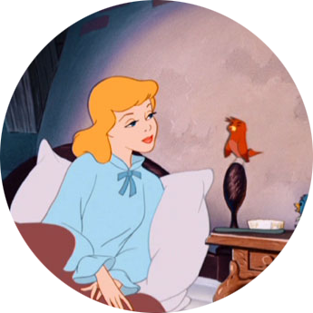

Absolute
Fixed
Relative
Sticky
Inherit

Один человек, овдовев, женился снова. У него была дочка — молодая девушка. Вместе с мачехой в доме поселились и две ее дочки — злые и вздорные, как и их мать. Мачеха невзлюбила падчерицу и взвалила на нее самую грязную работу. После работы бедная девушка садилась в уголок возле камина прямо на золу. Вот и прозвали ее сестры в насмешку Золушкой. Сами они жили в неге и довольстве.
Однажды в королевском дворце решили устроить бал. Приглашены на него были все знатные и богатые люди. Приглашение получили и золушкины сестры. Они бросились примерять нарядные бальные платья, а Золушка должна была их одевать и причесывать, да еще терпеть нескончаемые капризы. В конце концов, приготовления закончились, и сестры с матерью отправились на бал. Золушка же осталась дома и плакала в уголке. Очень уж ей хотелось тоже поехать на бал, да куда там — в таком рваном, испачканном золой платье.
Наступил вечер, и в сумерках в комнату вошла старая фея. Она спросила плачущую Золушку: — Ты очень хочешь попасть на королевский бал? Не плачь, помоги мне. Есть у вас большая тыква? Тыква нашлась в кладовке. Фея прикоснулась к ней своей волшебной палочкой, и тыква превратилась в золоченую карету. Потом фея заглянула в мышеловку. Взмах волшебной палочкой — и сидевшие там мыши оборотились шестеркой породистых лошадей. Пригодилась и крысоловка, и толстая усатая крыса превратилась в важного кучера на передке кареты.